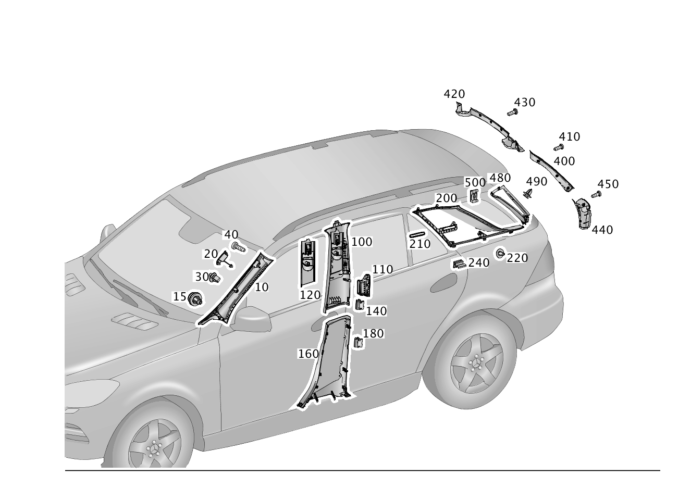

| № | Артикул | Название | Кол. | Примечание |
|---|---|---|---|---|
| 10 | A 166 690 13 25 | Обшивка передней стойки (VERKLEIDUNG A-SAEULE) | 1 | СТОЙКА A, СВЕРХУ СЛЕВА |
| 10 | A 166 690 14 25 | Обшивка передней стойки | 1 | СТОЙКА A, СВЕРХУ СПРАВА |
| 10 | A 166 690 13 25 | Обшивка передней стойки (VERKLEIDUNG A-SAEULE) | 1 | СТОЙКА A, СВЕРХУ СЛЕВА |
| 10 | A 166 690 14 25 | Обшивка передней стойки | 1 | СТОЙКА A, СВЕРХУ СПРАВА |
| 10 | A 166 690 43 25 | Обшивка передней стойки (VERKLEIDUNG A-SAEULE) | 1 | СТОЙКА A, СВЕРХУ СЛЕВА |
| 10 | A 166 690 44 25 | Обшивка передней стойки (VERKLEIDUNG A-SAEULE) | 1 | СТОЙКА A, СВЕРХУ СПРАВА |
| 10 | A 166 690 43 25 | Обшивка передней стойки (VERKLEIDUNG A-SAEULE) | 1 | СТОЙКА A, СВЕРХУ СЛЕВА |
| 10 | A 166 690 44 25 | Обшивка передней стойки (VERKLEIDUNG A-SAEULE) | 1 | СТОЙКА A, СВЕРХУ СПРАВА |
| 10 | A 166 690 77 25 | Обшивка передней стойки | 1 | СТОЙКА A, СВЕРХУ СЛЕВА |
| 10 | A 166 690 79 25 | Обшивка передней стойки (VERKLEIDUNG A-SAEULE) | 1 | СТОЙКА A, СВЕРХУ СЛЕВА |
| 10 | A 166 690 78 25 | Обшивка передней стойки | 1 | СТОЙКА A, СВЕРХУ СПРАВА |
| 10 | A 166 690 80 25 | Обшивка передней стойки (VERKLEIDUNG A-SAEULE) | 1 | СТОЙКА A, СВЕРХУ СПРАВА |
| 15 | A 001 991 27 98 | - Клипса обшивки (VERKLEIDUNGSCLIP) | 1 | КРЕПЛЕНИЕ ОБЛИЦОВКИ К А-СТОЙКЕ |
| 20 | A 166 692 03 22 | - Крышка | 1 | СТОЙКА A, СВЕРХУ СЛЕВА |
| 20 | A 166 692 03 22 | - Крышка | 1 | СТОЙКА A, СВЕРХУ СПРАВА |
| 30 | A 370 991 00 70 | - Пружинная скоба (FEDERKLAMMER) | 1 | СТОЙКА A, СВЕРХУ СЛЕВА |
| 30 | A 370 991 00 70 | - Пружинная скоба (FEDERKLAMMER) | 1 | СТОЙКА A, СВЕРХУ СПРАВА |
| 40 | N 000000 004553 | - Винт с 6-гр. глвк (SECHSRUNDSCHRAUBE) | 1 | СТОЙКА A, СВЕРХУ СЛЕВА |
| 40 | N 000000 004553 | - Винт с 6-гр. глвк (SECHSRUNDSCHRAUBE) | 1 | СТОЙКА A, СВЕРХУ СПРАВА |
| 40 | N 000000 001145 | - Винт с 6-гр. глвк (SECHSRUNDSCHRAUBE) | 1 | СТОЙКА A, СВЕРХУ СЛЕВА; M6X12 |
| 40 | N 000000 001145 | - Винт с 6-гр. глвк (SECHSRUNDSCHRAUBE) | 1 | СТОЙКА A, СВЕРХУ СПРАВА; M6X12 |
| 100 | A 166 690 03 25 | Обшивка средней стойки (VERKLEIDUNG B-SAEULE) | 1 | В-СТОЙКА СВЕРХУ СЛЕВА |
| 100 | A 166 690 31 00 | Обшивка средней стойки (VERKLEIDUNG B-SAEULE) | 1 | В-СТОЙКА СВЕРХУ СЛЕВА |
| 100 | A 166 690 39 01 | Обшивка средней стойки | 1 | В-СТОЙКА СВЕРХУ СЛЕВА |
| 100 | A 166 690 04 25 | Обшивка средней стойки (VERKLEIDUNG B-SAEULE) | 1 | B-СТОЙКА ВВЕРХУ СПРАВА |
| 100 | A 166 690 32 00 | Обшивка средней стойки (VERKLEIDUNG B-SAEULE) | 1 | B-СТОЙКА ВВЕРХУ СПРАВА |
| 100 | A 166 690 40 01 | Обшивка средней стойки (VERKLEIDUNG B-SAEULE) | 1 | B-СТОЙКА ВВЕРХУ СПРАВА |
| 100 | A 166 690 28 25 | Обшивка средней стойки | 1 | В-СТОЙКА СВЕРХУ СЛЕВА |
| 100 | A 166 690 35 00 | Обшивка средней стойки (VERKLEIDUNG B-SAEULE) | 1 | В-СТОЙКА СВЕРХУ СЛЕВА |
| 100 | A 166 690 43 01 | Обшивка средней стойки | 1 | В-СТОЙКА СВЕРХУ СЛЕВА |
| 100 | A 166 690 29 25 | Обшивка средней стойки | 1 | B-СТОЙКА ВВЕРХУ СПРАВА |
| 100 | A 166 690 36 00 | Обшивка средней стойки (VERKLEIDUNG B-SAEULE) | 1 | B-СТОЙКА ВВЕРХУ СПРАВА |
| 100 | A 166 690 44 01 | Обшивка средней стойки (VERKLEIDUNG B-SAEULE) | 1 | B-СТОЙКА ВВЕРХУ СПРАВА |
| 100 | A 166 690 45 25 | Обшивка средней стойки | 1 | В-СТОЙКА СВЕРХУ СЛЕВА |
| 100 | A 166 690 33 00 | Обшивка средней стойки (VERKLEIDUNG B-SAEULE) | 1 | В-СТОЙКА СВЕРХУ СЛЕВА |
| 100 | A 166 690 41 01 | Обшивка средней стойки (VERKLEIDUNG B-SAEULE) | 1 | В-СТОЙКА СВЕРХУ СЛЕВА |
| 100 | A 166 690 46 25 | Обшивка средней стойки | 1 | B-СТОЙКА ВВЕРХУ СПРАВА |
| 100 | A 166 690 34 00 | Обшивка средней стойки (VERKLEIDUNG B-SAEULE) | 1 | B-СТОЙКА ВВЕРХУ СПРАВА |
| 100 | A 166 690 42 01 | Обшивка средней стойки (VERKLEIDUNG B-SAEULE) | 1 | B-СТОЙКА ВВЕРХУ СПРАВА |
| 100 | A 166 690 47 25 | Обшивка средней стойки | 1 | В-СТОЙКА СВЕРХУ СЛЕВА |
| 100 | A 166 690 37 00 | Обшивка средней стойки (VERKLEIDUNG B-SAEULE) | 1 | В-СТОЙКА СВЕРХУ СЛЕВА |
| 100 | A 166 690 45 01 | Обшивка средней стойки (VERKLEIDUNG B-SAEULE) | 1 | В-СТОЙКА СВЕРХУ СЛЕВА |
| 100 | A 166 690 48 25 | Обшивка средней стойки | 1 | B-СТОЙКА ВВЕРХУ СПРАВА |
| 100 | A 166 690 38 00 | Обшивка средней стойки (VERKLEIDUNG B-SAEULE) | 1 | B-СТОЙКА ВВЕРХУ СПРАВА |
| 100 | A 166 690 46 01 | Обшивка средней стойки (VERKLEIDUNG B-SAEULE) | 1 | B-СТОЙКА ВВЕРХУ СПРАВА |
| 100 | A 166 690 81 25 | Обшивка средней стойки | 1 | В-СТОЙКА СВЕРХУ СЛЕВА |
| 100 | A 166 690 83 25 | Обшивка средней стойки | 1 | В-СТОЙКА СВЕРХУ СЛЕВА |
| 100 | A 166 690 01 26 | Обшивка средней стойки | 1 | В-СТОЙКА СВЕРХУ СЛЕВА |
| 100 | A 166 690 03 26 | Обшивка средней стойки | 1 | В-СТОЙКА СВЕРХУ СЛЕВА |
| 100 | A 166 690 82 25 | Обшивка средней стойки | 1 | B-СТОЙКА ВВЕРХУ СПРАВА |
| 100 | A 166 690 84 25 | Обшивка средней стойки (VERKLEIDUNG B-SAEULE) | 1 | B-СТОЙКА ВВЕРХУ СПРАВА |
| 100 | A 166 690 02 26 | Обшивка средней стойки | 1 | B-СТОЙКА ВВЕРХУ СПРАВА |
| 100 | A 166 690 04 26 | Обшивка средней стойки | 1 | B-СТОЙКА ВВЕРХУ СПРАВА |
| 110 | A 166 830 09 54 | - Вентиляционный дефлектор | 1 | В-СТОЙКА СВЕРХУ СЛЕВА |
| 110 | A 166 830 10 54 | - Вентиляционный дефлектор | 1 | B-СТОЙКА ВВЕРХУ СПРАВА |
| 110 | A 166 830 09 54 | - Вентиляционный дефлектор | 1 | В-СТОЙКА СВЕРХУ СЛЕВА |
| 110 | A 166 830 10 54 | - Вентиляционный дефлектор | 1 | B-СТОЙКА ВВЕРХУ СПРАВА |
| 120 | A 166 868 27 39 | - Крышка механ. регул. | 1 | РЕГУЛИРОВКА ВЫСОТЫ РЕМНЯ, СЛЕВА |
| 120 | A 166 868 27 39 | - Крышка механ. регул. | 1 | РЕГУЛИРОВКА ВЫСОТЫ РЕМНЯ, СЛЕВА |
| 120 | A 166 868 27 39 | - Крышка механ. регул. | 1 | РЕГУЛИРОВКА ВЫСОТЫ РЕМНЯ, СЛЕВА |
| 120 | A 166 868 27 39 | - Крышка механ. регул. | 1 | РЕГУЛИРОВКА ВЫСОТЫ РЕМНЯ, СЛЕВА |
| 120 | A 166 868 26 39 | - Крышка механ. регул. | 1 | РЕГУЛИРОВКА ВЫСОТЫ РЕМНЯ, СПРАВА |
| 120 | A 166 868 26 39 | - Крышка механ. регул. | 1 | РЕГУЛИРОВКА ВЫСОТЫ РЕМНЯ, СПРАВА |
| 120 | A 166 868 26 39 | - Крышка механ. регул. | 1 | РЕГУЛИРОВКА ВЫСОТЫ РЕМНЯ, СПРАВА |
| 120 | A 166 868 26 39 | - Крышка механ. регул. | 1 | РЕГУЛИРОВКА ВЫСОТЫ РЕМНЯ, СПРАВА |
| 140 | A 168 988 10 78 | Скоба (KLAMMER) | 2 | КРЕПЛЕНИЕ ОБЛИЦОВКИ СЛЕВА |
| 140 | A 168 988 10 78 | Скоба (KLAMMER) | 2 | КРЕПЛЕНИЕ ОБЛИЦОВКИ СПРАВА |
| 140 | A 000 991 36 70 | Пружинная скоба (FEDERKLAMMER) | 2 | КРЕПЛЕНИЕ ОБЛИЦОВКИ СЛЕВА |
| 140 | A 001 991 40 70 | Скоба (KLAMMER) | 4 | ОБЛИЦОВКА ЛЕВАЯ |
| 140 | A 000 991 36 70 | Пружинная скоба (FEDERKLAMMER) | 2 | КРЕПЛЕНИЕ ОБЛИЦОВКИ СПРАВА |
| 140 | A 001 991 40 70 | Скоба (KLAMMER) | 4 | ОБЛИЦОВКА ПРАВАЯ |
| 160 | A 166 690 00 25 | Обшивка средней стойки | 1 | B-СТОЙКА ВНИЗУ СЛЕВА |
| 160 | A 166 690 26 25 | Обшивка средней стойки | 1 | B-СТОЙКА ВНИЗУ СПРАВА |
| 160 | A 166 690 25 25 | Обшивка средней стойки | 1 | B-СТОЙКА ВНИЗУ СЛЕВА |
| 160 | A 166 690 27 25 | Обшивка средней стойки | 1 | B-СТОЙКА ВНИЗУ СПРАВА |
| 160 | A 166 690 85 25 | Обшивка средней стойки | 1 | B-СТОЙКА ВНИЗУ СЛЕВА |
| 160 | A 166 690 87 25 | Обшивка средней стойки (VERKLEIDUNG B-SAEULE) | 1 | B-СТОЙКА ВНИЗУ СЛЕВА |
| 160 | A 166 690 05 26 | Обшивка средней стойки | 1 | B-СТОЙКА ВНИЗУ СЛЕВА |
| 160 | A 166 690 86 25 | Обшивка средней стойки | 1 | B-СТОЙКА ВНИЗУ СПРАВА |
| 160 | A 166 690 88 25 | Обшивка средней стойки (VERKLEIDUNG B-SAEULE) | 1 | B-СТОЙКА ВНИЗУ СПРАВА |
| 160 | A 166 690 06 26 | Обшивка средней стойки | 1 | B-СТОЙКА ВНИЗУ СПРАВА |
| 180 | A 000 991 36 70 | Пружинная скоба (FEDERKLAMMER) | 4 | КРЕПЛЕНИЕ ОБЛИЦОВКИ СЛЕВА |
| 180 | A 000 991 36 70 | Пружинная скоба (FEDERKLAMMER) | 4 | КРЕПЛЕНИЕ ОБЛИЦОВКИ СПРАВА |
| 180 | A 000 991 36 70 | Пружинная скоба (FEDERKLAMMER) | 4 | КРЕПЛЕНИЕ ОБЛИЦОВКИ СЛЕВА |
| 180 | A 001 991 40 70 | Скоба (KLAMMER) | 4 | ОБЛИЦОВКА ЛЕВАЯ |
| 180 | A 000 991 36 70 | Пружинная скоба (FEDERKLAMMER) | 4 | КРЕПЛЕНИЕ ОБЛИЦОВКИ СПРАВА |
| 180 | A 001 991 40 70 | Скоба (KLAMMER) | 4 | ОБЛИЦОВКА ПРАВАЯ |
| 200 | A 166 690 09 25 | Облицовка задней стойки (VERKLEIDUNG C-SAEULE) | 1 | С-СТОЙКА СЛЕВА |
| 200 | A 166 690 10 25 | Облицовка задней стойки (VERKLEIDUNG C-SAEULE) | 1 | С-СТОЙКА СПРАВА |
| 200 | A 166 690 49 25 | Облицовка задней стойки (VERKLEIDUNG C-SAEULE) | 1 | С-СТОЙКА СЛЕВА |
| 200 | A 166 690 50 25 | Облицовка задней стойки (VERKLEIDUNG C-SAEULE) | 1 | С-СТОЙКА СПРАВА |
| 200 | A 166 690 09 26 | Облицовка задней стойки | 1 | С-СТОЙКА СЛЕВА |
| 200 | A 166 690 11 26 | Облицовка задней стойки | 1 | С-СТОЙКА СЛЕВА |
| 200 | A 166 690 10 26 | Облицовка задней стойки | 1 | С-СТОЙКА СПРАВА |
| 200 | A 166 690 12 26 | Облицовка задней стойки | 1 | С-СТОЙКА СПРАВА |
| 210 | A 166 692 00 59 | - Декоративная розетка | 1 | С-СТОЙКА СЛЕВА |
| 210 | A 166 692 00 59 | - Декоративная розетка | 1 | С-СТОЙКА СПРАВА |
| 210 | A 166 692 00 59 | - Декоративная розетка | 1 | С-СТОЙКА СЛЕВА |
| 210 | A 166 692 00 59 | - Декоративная розетка | 1 | С-СТОЙКА СПРАВА |
| 220 | A 000 991 46 98 | - Клипса обшивки (VERKLEIDUNGSCLIP) | 2 | ОБЛИЦОВКА НА СТОЙКЕ С СЛЕВА |
| 220 | A 000 991 46 98 | - Клипса обшивки (VERKLEIDUNGSCLIP) | 2 | ОБЛИЦОВКА НА СТОЙКЕ С СПРАВА |
| 220 | A 001 991 27 98 | - Клипса обшивки (VERKLEIDUNGSCLIP) | 2 | ОБЛИЦОВКА НА СТОЙКЕ С СЛЕВА |
| 220 | A 000 991 46 98 | - Клипса обшивки (VERKLEIDUNGSCLIP) | 4 | ОБЛИЦОВКА НА СТОЙКЕ С СЛЕВА |
| 220 | A 001 991 27 98 | - Клипса обшивки (VERKLEIDUNGSCLIP) | 2 | ОБЛИЦОВКА НА СТОЙКЕ С СПРАВА |
| 220 | A 000 991 46 98 | - Клипса обшивки (VERKLEIDUNGSCLIP) | 4 | ОБЛИЦОВКА НА СТОЙКЕ С СПРАВА |
| 240 | A 168 988 10 78 | Скоба (KLAMMER) | 1 | КРЕПЛЕНИЕ ОБЛИЦОВКИ СЛЕВА |
| 240 | A 168 988 10 78 | Скоба (KLAMMER) | 1 | КРЕПЛЕНИЕ ОБЛИЦОВКИ СПРАВА |
| 400 | A 166 693 01 63 | Декоративная накладка (ABDECKBLENDE) | 1 | D-СТОЙКА, СВЕРХУ СЛЕВА |
| 400 | A 166 693 01 00 | Декоративная накладка (ABDECKBLENDE) | 1 | D-СТОЙКА, СВЕРХУ СЛЕВА |
| 400 | A 166 693 01 17 | Крышка (ABDECKUNG) | 1 | D-СТОЙКА, СВЕРХУ СПРАВА |
| 400 | A 166 693 03 00 | Декоративная накладка (ABDECKBLENDE) | 1 | D-СТОЙКА, СВЕРХУ СПРАВА |
| 410 | A 000 991 59 40 | Распорная заклепка (SPREIZNIET) | 5 | КРЕПЛЕНИЕ КРЫШКИ СЛЕВА |
| 410 | A 000 991 59 40 | Распорная заклепка (SPREIZNIET) | 5 | КРЕПЛЕНИЕ КРЫШКИ СПРАВА |
| 420 | A 166 691 00 08 | Облицовка кр.зад.ст.куз. (D-SAEULENABDECKUNG) | 1 | КРЫША СЗАДИ В ЦЕНТРЕ |
| 430 | A 000 991 59 40 | Распорная заклепка (SPREIZNIET) | 7 | КРЫШКА НА РАМЕ КРЫШИ |
| 440 | A 166 691 03 08 | Облицовка кр.зад.ст.куз. (D-SAEULENABDECKUNG) | 1 | D-СТОЙКА, ВНИЗУ СЛЕВА |
| 440 | A 166 691 03 00 | Облицовка кр.зад.ст.куз. (D-SAEULENABDECKUNG) | 1 | D-СТОЙКА, ВНИЗУ СЛЕВА |
| 440 | A 166 691 02 08 | Облицовка кр.зад.ст.куз. (D-SAEULENABDECKUNG) | 1 | D-СТОЙКА, ВНИЗУ СПРАВА |
| 440 | A 166 691 00 00 | Облицовка кр.зад.ст.куз. (D-SAEULENABDECKUNG) | 1 | D-СТОЙКА, ВНИЗУ СПРАВА |
| 450 | A 000 991 59 40 | Распорная заклепка (SPREIZNIET) | 2 | КРЕПЛЕНИЕ КРЫШКИ СЛЕВА |
| 450 | A 000 991 59 40 | Распорная заклепка (SPREIZNIET) | 2 | КРЕПЛЕНИЕ КРЫШКИ СПРАВА |
| 480 | A 166 690 05 25 | Обшивка задней стойки (VERKLEIDUNG D-SAEULE) | 1 | D-СТОЙКА СЛЕВА |
| 480 | A 166 690 06 25 | Обшивка задней стойки (VERKLEIDUNG D-SAEULE) | 1 | D-СТОЙКА СПРАВА |
| 480 | A 166 690 15 26 | Обшивка задней стойки | 1 | D-СТОЙКА СЛЕВА |
| 480 | A 166 690 16 26 | Обшивка задней стойки | 1 | D-СТОЙКА СПРАВА |
| 490 | A 000 991 46 98 | - Клипса обшивки (VERKLEIDUNGSCLIP) | 2 | ПАНЕЛЬ ОБЛИЦОВКИ ЛЕВОЙ СТОЙКИ КУЗОВА "D" |
| 490 | A 000 991 46 98 | - Клипса обшивки (VERKLEIDUNGSCLIP) | 2 | ПАНЕЛЬ ОБЛИЦОВКИ ПРАВОЙ СТОЙКИ КУЗОВА "D" |
| 490 | A 001 991 27 98 | - Клипса обшивки (VERKLEIDUNGSCLIP) | 2 | ПАНЕЛЬ ОБЛИЦОВКИ ЛЕВОЙ СТОЙКИ КУЗОВА "D" |
| 490 | A 001 991 27 98 | - Клипса обшивки (VERKLEIDUNGSCLIP) | 2 | ПАНЕЛЬ ОБЛИЦОВКИ ПРАВОЙ СТОЙКИ КУЗОВА "D" |
| 500 | A 001 991 40 70 | Скоба (KLAMMER) | 1 | КРЕПЛЕНИЕ ОБЛИЦОВКИ СЛЕВА |
| 500 | A 001 991 40 70 | Скоба (KLAMMER) | 1 | КРЕПЛЕНИЕ ОБЛИЦОВКИ СПРАВА |
| 500 | A 001 991 40 70 | Скоба (KLAMMER) | 3 | КРЕПЛЕНИЕ ОБЛИЦОВКИ СЛЕВА |
| 500 | A 001 991 40 70 | Скоба (KLAMMER) | 3 | КРЕПЛЕНИЕ ОБЛИЦОВКИ СПРАВА |
Позиций: 133 · подписано на схемах: 133 · колесо — плавный зум в курсор, перетаскивание — пан, двойной клик — зум, клик по артикулу — скопировать.